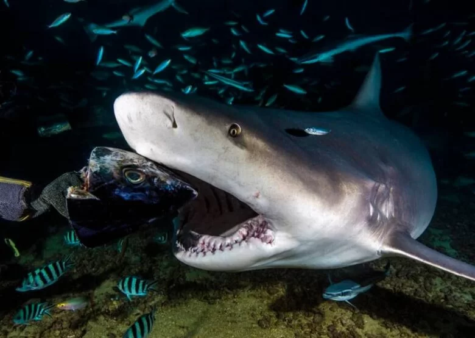

Tiburones
Vida del Tiburón
Los tiburones son una de las especies más antiguas del planeta, con más de 400 millones de años de evolución. Existen más de 500 especies, desde el imponente tiburón blanco hasta el pacífico tiburón ballena. Habitan todos los océanos del mundo y algunos incluso pueden nadar en aguas dulces. Son solitarios y recorren grandes distancias para buscar alimento o zonas de apareamiento.
Dieta
Su dieta depende de la especie: algunos se alimentan de peces, focas, calamares o incluso otros tiburones, mientras que otros como el tiburón ballena se alimentan por filtración, consumiendo plancton y pequeños peces. Usan sus sentidos extremadamente desarrollados —como el olfato y la detección de campos eléctricos— para cazar de manera eficiente.

Depredadores y amenazas
Aunque son depredadores tope, los tiburones también enfrentan amenazas. Sus principales enemigos naturales son orcas y, en el caso de los más jóvenes, otros tiburones. Sin embargo, su mayor amenaza es el ser humano, debido a la pesca indiscriminada, la contaminación marina y la caza por sus aletas, práctica que ha llevado a muchas especies al borde de la extinción.
Habilidades
Los tiburones tienen habilidades asombrosas: su piel está recubierta de diminutas escamas que reducen la fricción al nadar; algunos pueden detectar impulsos eléctricos de otros animales a kilómetros de distancia; y su sentido del olfato les permite detectar una gota de sangre en millones de litros de agua. Además, muchos tienen una excelente visión nocturna.
Esperanza de vida
La esperanza de vida varía ampliamente según la especie. El tiburón blanco puede vivir entre 30 y 70 años, mientras que el tiburón de Groenlandia, uno de los más longevos, puede superar los 400 años. En cautiverio, muchos tiburones no viven tanto tiempo debido al estrés y las condiciones limitadas.
Reproducción
Los tiburones tienen distintos métodos de reproducción: algunos ponen huevos (ovíparos), otros dan a luz crías vivas (vivíparos). El cortejo puede ser agresivo, y las crías nacen completamente desarrolladas, listas para sobrevivir por sí solas desde el primer momento. La tasa de reproducción es baja, lo que hace que se recuperen lentamente de la disminución de población.
En resumen, los tiburones son piezas clave en el equilibrio marino. Son animales fascinantes, adaptados a sobrevivir en condiciones extremas y con una historia evolutiva impresionante. Protegerlos es esencial para conservar la salud de nuestros océanos.